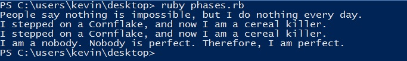
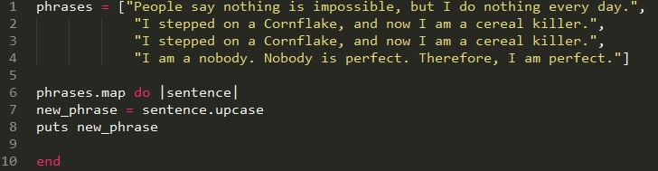
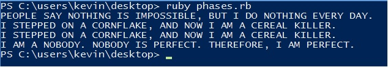
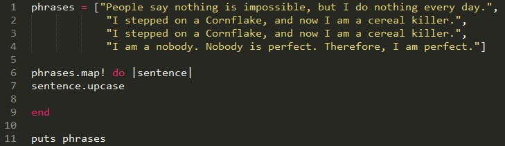
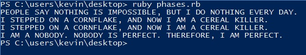

#Map
Map is a very useful method which works similarly with the each method but actually maintains an accumulator array of results from the block. The map method takes an enumerable object and a block, and runs the block for each element, outputting each returned value from the block but the original object are unchanged unless you use map! Let’s check out the examples below.
If we run this program here would be our output:
As you can see, the array we set did not #upcase the sentence. How come? Because this undestructive method and it does not change the actual array. If we want to capitalize the sentence there is two ways we can do this. One way is we can assign new array and print the new array within the method. See the example below.
Output:
In the example above, we see that the using map to iterate over the phrase and set it to a new array and print that array out we see that the sentences are now capitalize.
Another way we can receive the same output is change the original array (phrases) using map! And when I say map! I actually mean “map!” Just look at the example below….
Output:
By using map! we are destructively change the array and able to puts out the array outside the method. I hope this helps with your ruby journey!